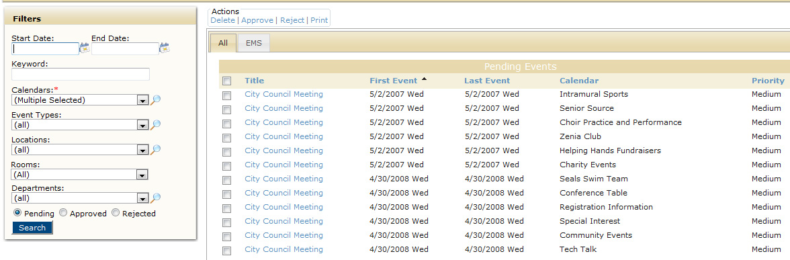
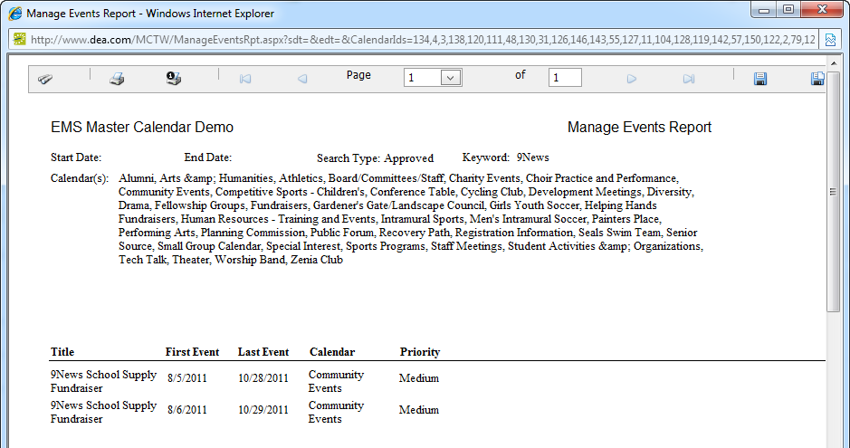

You can generate a Manage Events List report, which lists all the events to which you have access as a Master Calendar manager. You can generate a report that lists all the pending events for all calendars to which you have access as a Master Calendar manager or you can generate a report for events with different statuses.
1. On the Admin menu, point to Events & Special Dates, and then click Manage Events. The Manage Events page opens. When this page first opens, the list of events that
appears is a list of all pending events for all calendars to which you have access as a Master Calendar manager.
Manage Events page

2. Do one of the following:
• To generate a Manage Events List report that lists all pending events for all calendars to which you have access as a Master Calendar manager, click Print.
• To generate a Manage Events List report for events with different statuses, filter for these events and click Print.
• To generate a Manage Events list report for all EMS events for which you are the Calendar Manager, click the EMS tab to open it, and then click Print.
An onscreen preview of the Manage Events List report opens in its own window. A variety of options are available from this preview, including (from left to right at the
top of the onscreen preview) the options to search the report results, print the report in its entirety, print the currently displayed report page, and export the report to a file
and save the file. PDF is the default format for exporting to a file.
Onscreen preview for a Manage Events List report

Page tags: article:topic